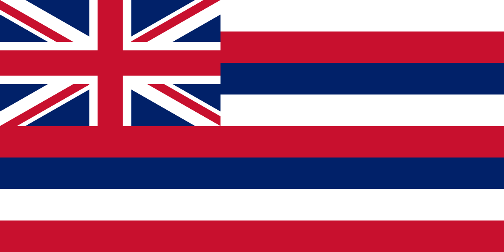

Origin Story
To begin with I was born on March 2nd, 2003 in Hawaii on the Island of Kauai. I lived there for several months and then moved to oregon where I spent a couple months there. Following Oregon, I moved to Utah where my brother was born. After that we moved to NorthWest Arkansas where my dad starting his career in the walmart sphere of influence. After that we didn't look back and I have lived there till I graduated from Highschool. I made many friends and accomplished more than anyone could image when I was born. With Highschool over, I went to BYU to pursue a degree in accounting. 
Hobbies
To begin with I love swimming. Not just hopping in the pool and having fun, I mean the real swimming. I have had a long 7 year career competitevly swimming where I enjoyed
many successes. At first I didn't like it, but I soon came to enjoy the sport. I pushed myself harder each year to improve. Now that I don't swim on a team, I swim on my own
every day just like I did for the past 7 years. Sure it's Hard, but its the most rewarding thing I do with my time.

Another interest of mine is video games. I know who would have guessed it? But in seriousness, video games are great. From an early age I always gravitated towards video games.
I started like any other kid on my phone with mobile games and eventually got a ps3. At this stage I played mostly lego games and skylanders. Eventually I recieved a ps4 which sent me
into a new world of first person shooters. Games like Call of Duty and Rainbow Six Siege were so much fun. Then I switched over to xbox where I pursued Fortnite, Call of Duty, and Rainbow Six Siege
all at the same time. What I loved about these games was the strategy and slow to fast pace of the games. It was a good balance for swimming because I needed to do something to do that would push my
cognitive funciton.

My last interest is viewing professional sports. I would say that I mostly watch NFL an NBA, but I will always be down to watch anything sports related. Getting into watching sports helped me fuel
my passion for swimming. I loved watching the games and eventually got into fantasy leauges where I won consistenly. I soaked up as much knowledge of the sports I loved from the history to the strategies.
This knowledge has helped me connect with people that I would normally wouldn't and I will always be grateufl for what sports have unlocked for me.

Goals In Life
My goals in life are like most people. To begin with I want to have an amazing career. I would love to be able to work in law, taxes, and finance. But with all this said I want a life work balance.
I want to be able to raise a family and support them both finacially and emotionally. For me I want to be someone that people can look towards in times of need. I know I don't have all the answers,
but I will try my best to find one.

Journal
Not much yet, but will come when it will.